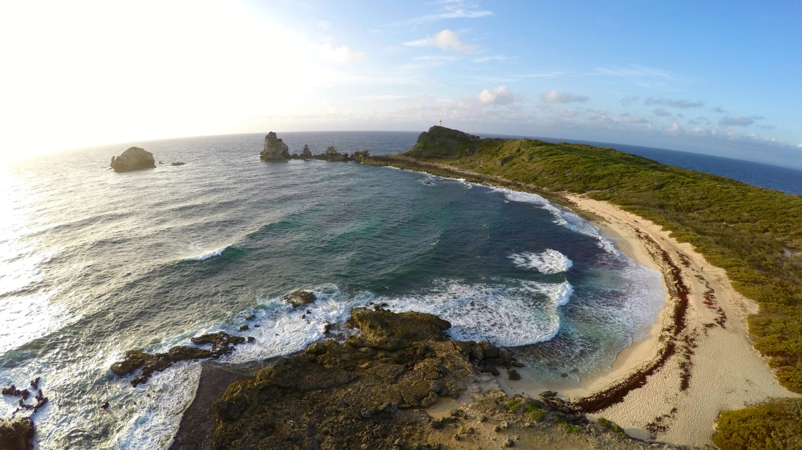

Decouvrez des lieux cultes et insolites
Vous allez découvir des lieux incontournables à visiter. Des lieux connus mais aussi d'autres plus discret.
Le parc des mamelles
Le parc des mamelles est un lieux assez connus en Guadeloupe. Il se situe au milieu de la forêt et comporte différentes activitées, vous pourrez voir différentes espèces d'animaux présent en guadeloupe, enrichir vos connaissances, y découvrir la faune et la flore de la guadeloupe. Mais vous pourrez aussi vous balader dans les arbres grâce au Tappeur situé en face du parc. Lien vers le site...

La point des chateaux
La pointe des château est le site le plus visité en Guadeloupe avec plus de 500 000 visiteurs annuels. Ce lieux ne comporte aucun château contrairement à son nom. C'est un lieux qui à une origine religieuse. Ce site est surplomber d'une croix religieuse avec un vus à couper le souffle. On peut y aperçevoir l'îles de la désirade, Marie-galante mais également les Saintes. La plage qui est présente contrairement à son apperence est l'une des plus dangeureuse de la Guadeloupe. La baignade y est donc interdite.
La soufrière
La soufrière est le point le plus élevé des Antilles. Son sommet atteint 1 467 mètres et domine la Basse-Terre. L'ascension du volcan la Soufrière est possible mais peut être assez sportif pour une minorité de personne. Au pied de ce volcan on pourra y trouver une source chaude nommée les bains-jaunes. Une fois arrivée au sommet vous aurez une vue inébranlable sur tout le sud Basse-Terre.

Les saintes
Un lieu incontournable, ce petit archipel vous réservera plein de surprise. Pour rejoindre les Saintes vous devrez prendre un bateau. Terre e haut est l'île la plus visitée des deux. Malgré un flux touristiques important l'archipel à su conserver sont authenticité. Le meilleur moyen de transport sur l'île est le scooter, mais il est également possible de visiter l'île à pied. Les lieux à visiter aux Saintes sont le Fort Napoléon, la baie de Terre-De-Haut, la plage de Pompierre. Vous pourrez aussi découvrir des spécialités comme les tourments d'amour ou plus encore les crèpes de poisson. Vous y découvrirez également un univers sous-marin hors du commun.